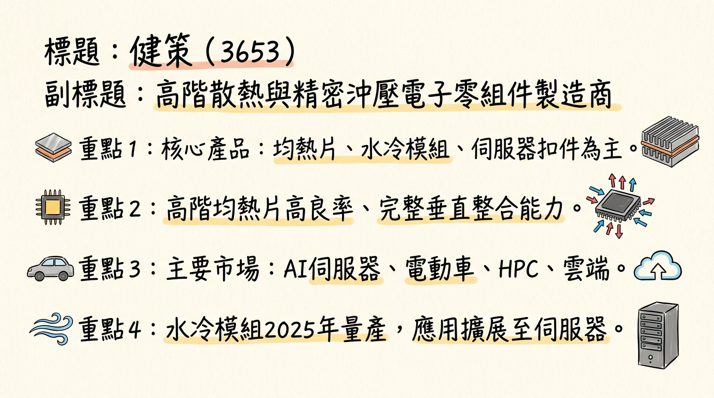
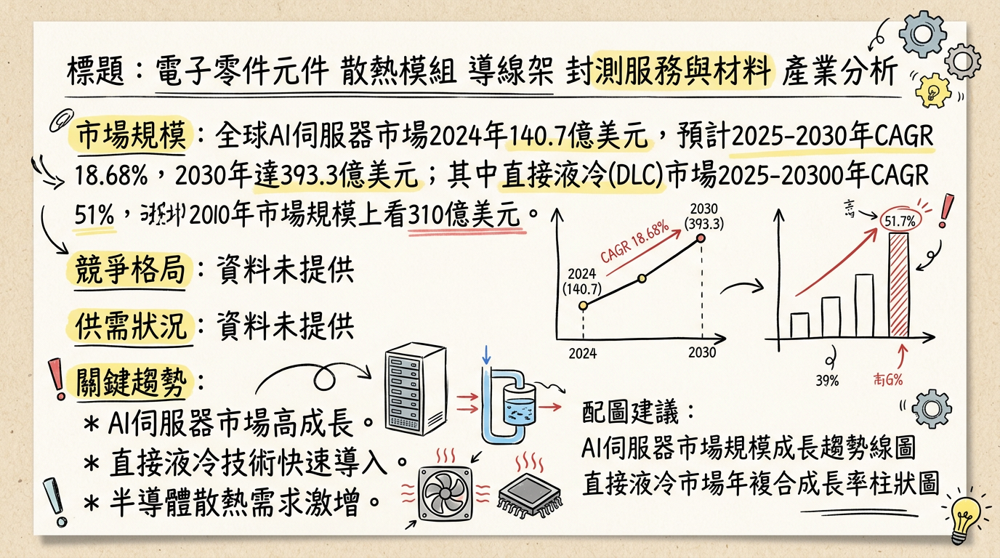
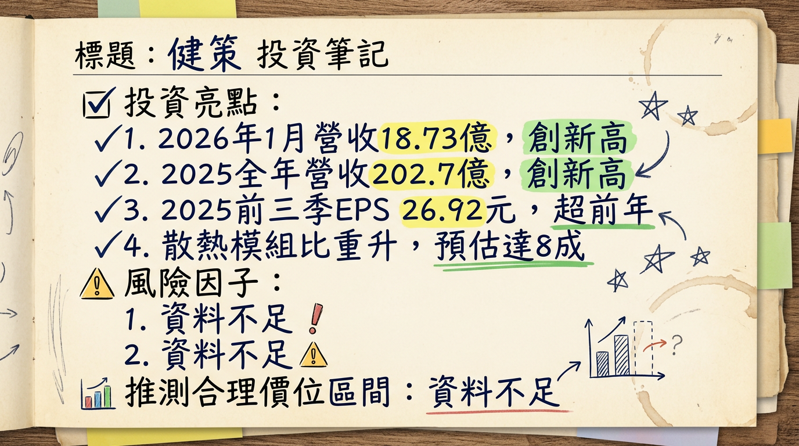

健策（3653）憑藉其在高階散熱與精密沖壓領域的技術領先及垂直整合能力，在AI伺服器、HPC及電動車等高成長市場受惠顯著。公司在微通道蓋板（MCL）等次世代散熱技術具備優勢，配合積極的產能擴張計畫，營收與獲利屢創歷史新高。法人普遍看好其2026年及往後年度的強勁成長動能，目標價區間已上修至4,100元至5,000元。
健策（3653）主要從事電子零組件的製造，是散熱與精密沖壓領域的重要廠商。其核心產品與服務聚焦於高階散熱解決方案及精密機構件，主要應用於AI伺服器、雲端資料中心、高效能運算裝置及電動車等高門檻領域。公司具備垂直整合能力，提供從封裝級到系統級的完整散熱與結構件解決方案，以解決高熱量產生的散熱及結構應力問題，並縮短產品開發週期。
核心產品包括：| 產品線分類 | 2024年Q1-Q3 營收佔比 | 2024年全年 營收佔比 | 2025年Q3 散熱模組佔比 (預估) | 2025年Q4 散熱模組佔比 (預估) | 2026年 散熱模組佔比 (預估) |
|---|---|---|---|---|---|
| 散熱產品 (均熱片、水冷等) | 63% | 66% | - | - | - |
| 散熱模組 | - | - | ~70% | ~75% | 上看80% |
| 導線架 | ~15% | - | - | - | - |
| 機構件 (ILM/扣件) | - | - | - | - | - |
健策的製造基地主要位於台灣。公司正積極展開擴產計畫以滿足客戶需求，主要集中在大園廠區。目前未找到各製造基地的具體營收貢獻比例資料。
| 月份 (2025-2026) | 金額 (億元) | 月增率 MoM | 年增率 YoY |
|---|---|---|---|
| 2026年01月 | 18.73 | 0.16% | 29.43% |
| 2025年12月 | 18.70 | 9.91% | 13.27% |
| 2025年11月 | 17.01 | 0.03% | 16.66% |
| 2025年10月 | 17.01 | 0.23% | 29.82% |
| 2025年09月 | 16.97 | 0.43% | 40.90% |
| 2025年08月 | 16.90 | 0.43% | 40.48% |
| 期間 | 營收 (億元) | 年增率 (%) | 季增率 (%) | EPS (元) |
|---|---|---|---|---|
| 2025年Q4 (預估) | 52.72 | 19.29 | 4 | - |
| 2025年Q3 (實際) | 50.70 | 41.09 | -2.16 | 9.49 |
| 2025年Q1-Q3 (累計) | - | - | - | 26.92 |
| 2025年全年 (實際) | 202.76 | 42 | - | - |
| 2024年全年 (實際) | 142.78 | 18.37 | - | 24.15 |
* 歐系券商預估2025年EPS為36.8元 (2025年12月5日，⚠️過時)。
* 2025年資本支出預計落在5億至7億元區間。
* 2026年因應新廠房動工建設，資本支出將大幅提升至20億至30億元之間。
* 展望2026年，法人預期健策營收將逐季走升，並可留意MCL量產時程。
| 券商名稱/機構 | 目標價 (元) | 評等 | 日期 | 備註 |
|---|---|---|---|---|
| 瑞銀證券 | 5000 | 買進 | 2025年12月7日 | - |
| 國內大型金控旗下投顧 | 4200 | 增持 | 2026年2月26日 | 首評 |
| FactSet (綜合 6 位分析師) | 4100 | - | 2026年1月25日 | 較先前 3955 元上修 3.67% |
| 國泰大和 DW | 4335 | 買進 | 2025年12月10日 | 首次評等 |
| 摩根士丹利 (小摩) | 3650 | 點讚 | 2025年9月30日 | 首次點讚 (歷史參考) |
| 券商名稱/機構 | 日期 | 2025年EPS (元) | 2026年EPS (元) |
|---|---|---|---|
| 國內大型金控旗下投顧 | 2026年2月26日 | 59.02 | 119.99 |
| 歐系券商 (⚠️過時) | 2025年12月5日 | 36.8 | 61.3 |
| 季度 | 毛利率 (%) | 營業利益率 (%) | 稅後淨利率 (%) |
|---|---|---|---|
| 2025年Q3 | 38.97 | 29.28 | 26.96 |
| 2025年Q2 | 41.48 | 32.80 | 21.82 |
| 2025年Q1 | 44.91 | 35.06 | 28.93 |
| 2024年Q4 | 37.73 | 27.58 | 24.86 |
| 2024年Q3 | 38.13 | 27.00 | 21.56 |
| 2024年Q2 | 38.84 | 27.98 | 25.08 |
| 2024年Q1 | 35.15 | 22.97 | 24.04 |
* 產品組合升級： 健策營收高度集中於散熱產品，特別是高階熱擴散片和汽車熱管理零組件。隨著AI伺服器需求強勁，產品組合持續向高毛利產品集中（如高階熱擴散片、MCL、VCL），有助於挹注整體獲利。高階散熱產品的毛利率明顯高於LED導線架及其他電子零件。
* AI伺服器需求： AI GPU與客製化ASIC功耗大幅增加，使高階熱擴散片成為AI伺服器與資料中心平台的標準配備，帶動散熱材料需求擴張，提升獲利能力。
* 產能擴充效益： 產能持續擴充，使公司實際出貨量與平均單價（ASP）均優於原先市場較保守的假設，對營收和獲利產生正面影響。法人預期，隨著散熱模組比重在2026年上看8成，毛利率可望來到40%水準。
* 2026年資本支出將大幅提升至20億至30億元之間，主要用於新廠房建設。
* 大園三廠（航空城新廠）： 第一期廠房面積11,340坪，預計於2027年第一季完工，將專注於高階均熱片、車用水冷及伺服器扣件等產品。
* 2026-2027年台灣廠房合計將新增16,075坪，相較現有台灣廠房面積成長超過114%。
* AI 伺服器市場：
* 2024年全球市場規模估計為140.7億美元。
* 預計2025年成長至166億美元。
* 2025年至2030年間CAGR為18.68%，預計到2030年達393.3億美元。
* 半導體冷卻裝置市場：
* 預計從2025年的8.4853億美元，以7.14%的CAGR成長，到2032年達到13.7087億美元。
* 直接液冷 (DLC) 市場：
* 預估2025年至2030年間CAGR可達51%，市場規模上看310億美元。
目前散熱產業在高階AI伺服器應用領域呈現供不應求的狀況。
* AI伺服器需求強勁，最新GPU功耗動輒700W以上，傳統氣冷技術難以應對。
* NVIDIA執行長黃仁勳表示，GB200 AI伺服器需求「瘋狂」，預期台灣數家散熱廠2025年液冷營收將年增一倍以上。
* 2026年液冷將開始實際放量、貢獻營收。新一代平台功耗密度再上台階，使得散熱設計從「單顆晶片水冷」升級為「整櫃液冷」。
* 高階銅箔基板（CCL）市場極度緊俏，反映高階電子材料供需緊張。
高階散熱產品的毛利率預期將顯著提升：
* 法人預期奇鋐、雙鴻、建準2025年毛利率將分別上揚至25%、28%、29%。
* 奇鋐2026年上半年毛利率有望顯著跳升至28%至29%，主要歸功於高單價、高毛利的水冷伺服器產品比重提升。
* 雙鴻2025年第三季毛利率衝上29.77%。
* 健策法人點出，預期2025年第四季毛利率將較2025年第三季增加，且隨著散熱模組比重在2026年上看8成，毛利率可望來到40%水準。
| 公司名稱 (股票代碼) | 主要產品/專注領域 |
|---|---|
| 奇鋐 (3017) | 散熱模組、水冷板、風扇門、機殼、分歧管 |
| 雙鴻 (3324) | 散熱模組、水冷板、分歧管、浸沒式液冷系統 |
| 健策 (3653) | 均熱片、水冷散熱模組、伺服器 ILM 扣件、微通道蓋 (MCL) |
| 建準 (2421) | 散熱風扇、散熱模組 |
| 高力 (8996) | 熱交換器、板式熱交換器 |
| 台達電 (2308) | 電源、風扇、液冷 CDU、整櫃方案 |
| 比較項目 | 健策 (3653) | 奇鋐 (3017) | 雙鴻 (3324) |
|---|---|---|---|
| 技術 | 高階均熱片高良率優勢，垂直整合能力。MCL技術護城河高，直接接觸晶片並涉及電鍍。水冷散熱模組2025年量產。 | AI伺服器水冷散熱強勁，PC散熱模組龍頭。獲GB200水冷板模組、風扇門等訂單，2025年Q2後放量。投入MCCP研發。 | 提供直接式/浸沒式液冷整機系統。2025年Q2後出貨水冷板模組、分歧管。列間冷卻分配單元2026年量產。 |
| 產能 | 2025-2027年大園廠擴建，總廠房面積增約30%，擴大高階熱擴散片與IGBT液冷散熱模組產能。 | VR200與Trainium3水冷產品2026年6月量產。2026年Q4銜接Google TPUv8水冷產品放量。 | 預設2026年營收成長目標50%以上。預估2026年液冷產品營收比重超過55%。 |
| 客戶 | 均熱片供應AMD、英特爾、輝達。 | 輝達水冷零組件主力供應商，橫跨GPU、ASIC AI。AWS T4伺服器水冷主要供應商之一。 | 受惠AI伺服器液冷，打入高階AI散熱。握美系雲端客戶AISC訂單。受益於GB300、VR系列及其他雲端/ASIC平台。 |
| 價格/毛利率 | 高階散熱產品毛利率明顯高於LED導線架。預期散熱模組比重達8成時，毛利率可望達40%水準。 | 2026年上半年毛利率有望跳升至28%至29%，歸功於高單價、高毛利水冷伺服器產品比重提升。 | AI散熱市場高速擴張下，獲利規模仍顯著提升，但主要客戶在水冷板產品上的供應策略可能壓抑長期毛利率。 |
| 公司名稱 (股票代碼) | 預估 2025年 EPS (元) | 預估 2026年 EPS (元) | 預估 2025年 毛利率 (%) | 預估 2026年 毛利率 (%) | 營收成長動能 (2026) |
|---|---|---|---|---|---|
| 健策 (3653) | 59.02 (投顧) | 119.99 (投顧) | (Q4預估40%) | 40 (散熱模組比重達8成時) | 市場預期2025-2026年營收與獲利續創新高，受惠高階散熱產品、產品組合高階化、產能開出。 |
| 奇鋐 (3017) | 31.61 (年增48%) | - | 25 | 28-29 (上半年) | 2026年1月營收達170.03億元，年成長150.01%。預期2026年Q1、Q2營收季增5-10%。 |
| 雙鴻 (3324) | 30.12 / 38.3 (年增74%) | 51.91 / 48 | 29.77 (Q3) | - | 2026年營收成長目標50%以上。預計2026年Q1營收可望季持平，年增率仍有機會維持在50%以上。 |
| 建準 (2421) | 7.23 (年增24%) | - | 29 | - | - |
* 液冷散熱成為主流 (Liquid Cooling Dominance)
* 趨勢: AI模型規模擴張使伺服器功耗飆升，傳統氣冷散熱難以應對。液冷解熱能力約為氣冷3.5倍，預計2026年起液冷伺服器出貨占比將加速上升。
* 具體影響: 液冷技術要求散熱廠商提供更全面的水冷解決方案（水冷板、分歧管、CDU等），同時帶來資料中心設計變革，包括風扇減少、空間釋放、算力密度提高及能耗下降。
* 微通道冷板/蓋 (MCCP/MCL) 技術興起
* 趨勢: 為縮短熱傳路徑，讓冷卻液更貼近裸晶，提升散熱效率，微通道冷板/蓋技術應運而生，最快2025年有望量產。輝達下世代GPU將持續提升算力，需要MCCP/MCL等新技術升級散熱能力。
* 具體影響: 將液冷板與晶片上的均熱片整合，透過蝕刻微小通道讓冷卻液直接流過，大幅縮減冷卻液與晶片距離。這對散熱廠在晶片封裝、電鍍技術等方面提出更高要求，具備均熱片技術優勢的廠商將佔有先機。
* 浸沒式散熱 (Immersion Cooling) 的發展
* 趨勢: 將電子元件浸泡在不導電液體中，透過液體循環帶走熱量。
* 具體影響: 雖解熱能力極高，但面臨建置成本高、需大幅調整機架架構、硬體相容性不足及冷卻液成本高等阻礙。短期內液冷仍被認為是最佳解決方案之一。
* 機會:
* 高階散熱需求爆發： AI伺服器、HPC及電動車高功耗應用對高階均熱片、水冷散熱模組、MCL等需求持續提升，健策明確受惠。
* 技術領先與垂直整合： 高階均熱片的高良率優勢及MCL等關鍵技術護城河，使其在新一代散熱技術變革中佔據先機。
* 產能擴充以應對成長： 大園廠擴建增加約30%廠房面積，擴大高階熱擴散片與IGBT液冷散熱模組產能，有助把握市場成長機會。
* 切入新興平台與應用： 水冷散熱模組2025年量產出貨，MCL研發推進帶動新一波成長。新能源車液冷模組與IGBT基板提供中長期訂單能見度。
* 威脅:
* 市場競爭加劇： 散熱產業競爭激烈，存在價格競爭、客戶認證週期長等風險，同業奇鋐、雙鴻亦積極擴充液冷產能。
* 客戶集中度風險： AI訂單不如預期或單一主要客戶採購策略調整，可能影響成長軌跡。
* 技術快速迭代與資本投入： 散熱技術演進快速，需持續投入大量研發以維持競爭力。
* AI 伺服器與高效能運算 (HPC)： 健策核心產品均熱片、水冷散熱模組和伺服器ILM扣件，主要應用於AI伺服器、雲端資料中心及HPC等高門檻領域。AI晶片功耗提升，高階熱擴散片成為標準配備，健策直接受惠NVIDIA GB300等新平台。
* HBM (高頻寬記憶體)： HBM高熱量對散熱要求更高，液冷散熱技術適合處理GPU、HBM等高度集中的熱源，健策提供的高階散熱解決方案有助確保HBM穩定運作。
* 電動車 (EV)： 健策產品應用延伸至電動車領域，研發重心投入新能源車液冷模組與IGBT基板。電動車對高效能熱管理的需求是健策另一個重要成長動能。
* 全年： 營收突破202.7億元，年增42%，創歷史新高。前三季EPS 26.92元超越2024年全年。水冷散熱模組開始量產出貨。首度獲選台積電優良供應商 (11月28日)。
* 2026年下半年： 領先取得NVIDIA Rubin系統的微通道蓋板（MCL）技術合作認證，預計正式導入應用並啟動量產布局。
* 全年： 法人預期營收逐季走升，散熱模組營收占比上看8成。NVIDIA GB300系列AI伺服器出貨量上看6萬櫃，推升供應鏈需求。資本支出大幅提升至20億至30億元，用於新廠建設。
* 全年： MCL技術有望成為AI伺服器主流散熱方案。
健策（3653）作為AI伺服器散熱領域的領航者，其投資價值在於：
綜合以上分析，考量健策在AI散熱領域的技術領先、產能擴張以及MCL帶來的潛在爆發性成長，我們建議投資人可將健策納入投資組合。基於多家券商的最新目標價區間，我們建議健策的目標價區間介於 4,100元至 5,000元。
本報告由 AI 自動產生，資料來源為公開網路資訊，僅供參考，不構成投資建議。產生時間：2026-03-06 13:00


